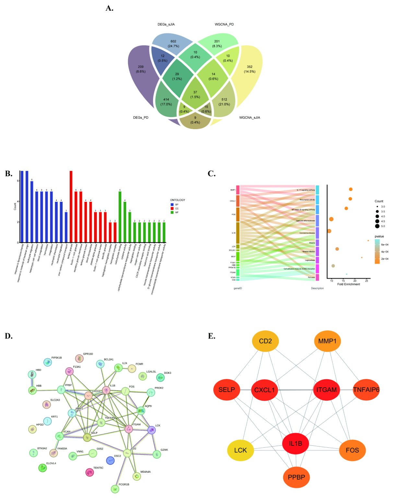
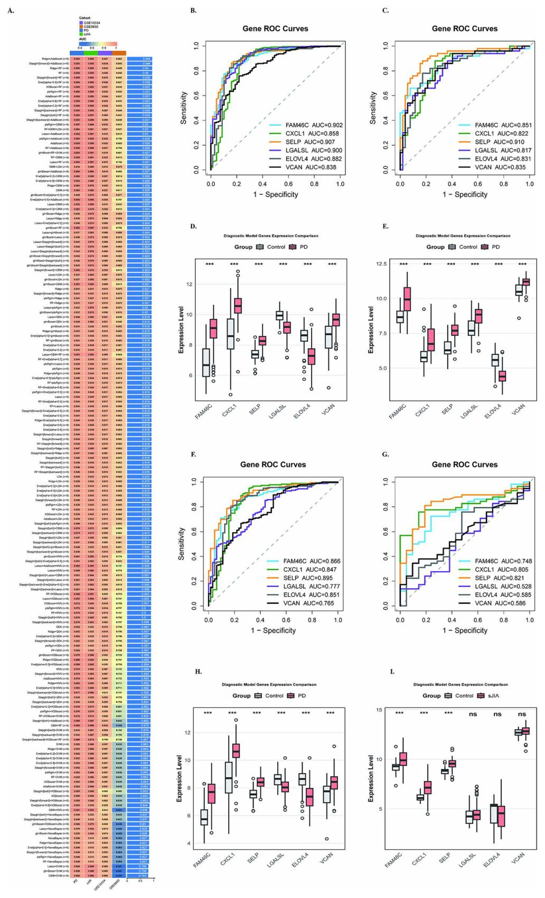
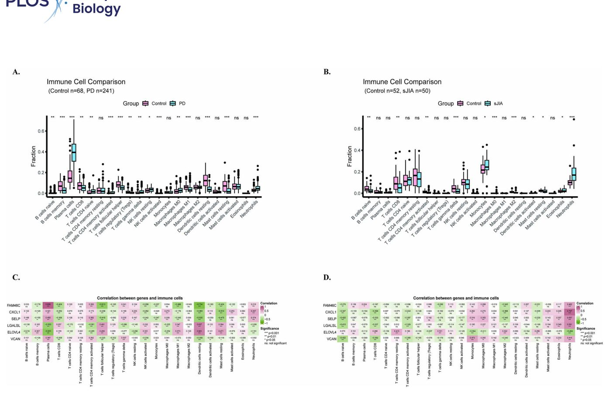
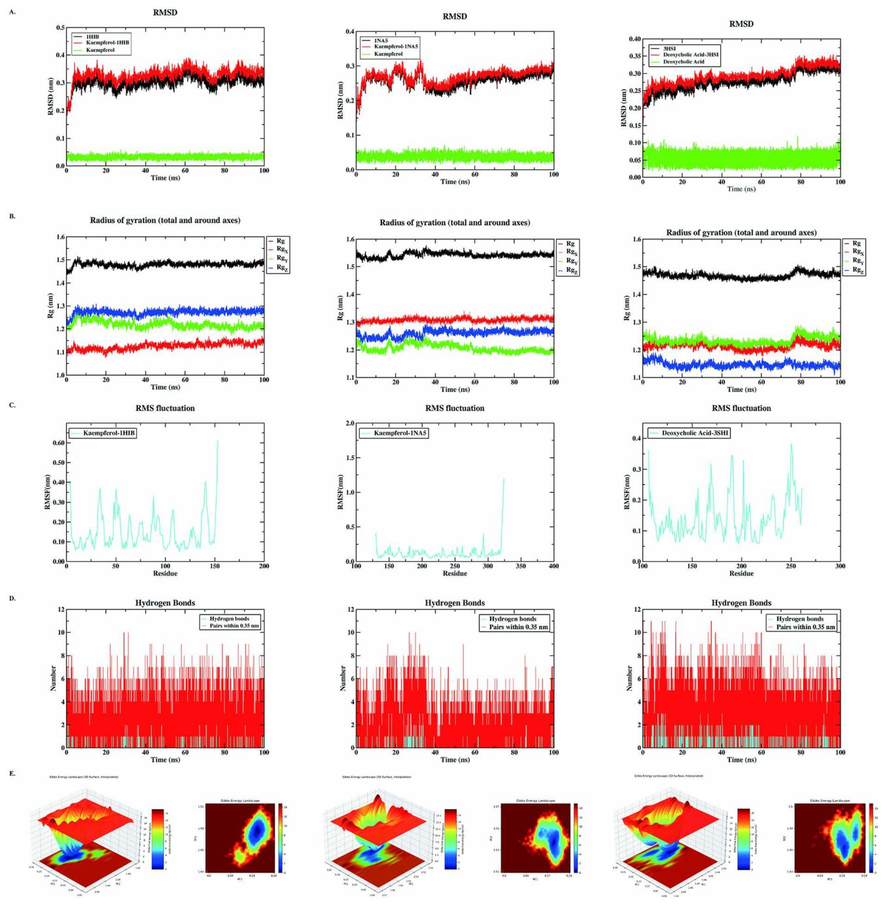

Қызыл иек ауруы мен артрит: ортақ генетикалық код

Пародонтит пен жүйелі ювенильді идиопатиялық артрит (сЮИА) арасындағы байланыс медицинада бұрыннан белгілі, бірақ оның молекулалық себептері түсініксіз еді. Зерттеушілер генетикалық деректерді талдап, екі ауруға да тән 37 ортақ генді тапты. SELP гені ауруларды диагностикалауда маңызды маркер бола алады.
Басты ойлар
- IL-17 және NF-κB жолдарына қатысатын 37 ортақ ген табылды.
- SELP гені екі ауру үшін де ең сенімді диагностикалық маркер ретінде анықталды.
- Кемферолдың IL1B және ITGAM ақуыздарымен байланысу мүмкіндігі дәлелденді.
Толығырақ
Зерттеу барысында GEO деректер базасы және 175 машиналық оқыту моделі қолданылды. Ridge және AdaBoost модельдерінің комбинациясы ең жоғары дәлдікті көрсетті. Анықталған гендер, әсіресе SELP және CXCL1, созылмалы қабынуға жауап беретін IL-17 және NF-κB жолдарында маңызды рөл атқарады.
Молекулалық докинг және 100 наносекундтық динамикалық модельдеу арқылы MMP1, IL1B және ITGAM ақуыздарына әсер ететін дәрілік заттар зерттелді. Нәтижелер кемферол мен дезоксихоль қышқылының осы ақуыздармен тұрақты байланысатынын көрсетті. Бұл жаңалық екі ауруды емдеудің жаңа әдістерін табуға жол ашады.
Шектеулер
Зерттеу биоинформатикалық талдауға негізделген, сондықтан клиникалық сынақтарды қажет етеді.
Мақаланың толық аудармасы
Түйіндеме
Пародонтит (PD) және жүйелі ювенильді идиопатиялық артрит (sJIA) — клиникалық байланыстары бар созылмалы қабыну аурулары, алайда олардың ортақ молекулалық механизмдері әлі де түсініксіз — JIA бар науқастарда пародонт ауруларының қаупі жоғары, JIA кезінде зақымданатын самай-төменгі жақ буыны PD-мен ортақ қабыну жолдарына ие, Th17 жасушалары екі жағдайды да қоздырады және глюкокортикоидты терапия пародонттың осалдығын күшейтуі мүмкін. Бұл зерттеудің мақсаты GEO деректер базасындағы гендер экспрессиясы деректерін пайдалана отырып, PD және sJIA-ның ортақ механизмдері мен әлеуетті терапиялық нысаналарын зерттеу болды және кешенді биоинформатикалық талдаулар, соның ішінде дифференциалды экспрессияланатын гендерді талдау, гендердің ко-экспрессия желілерін салмақты талдау (WGCNA), функционалды байыту талдауы, ақуыз-ақуыз өзара әрекеттесу желісін құру және 175 болжамды модель бойынша машиналық оқыту жүргізілді, мұнда Ridge + AdaBoost комбинациясы ең жақсы нәтиже көрсетті. Әрі қарай модельді түсіндіру үшін SHapley Additive exPlanations (SHAP), иммундық инфильтрацияны бағалау үшін CIBERSORT және терапиялық нысаналарды валидациялау үшін 100-нс молекулалық динамикалық модельдеуімен молекулалық докинг қолданылды. Біз PD және sJIA арасында 37 ортақ кандидат генді анықтадық, олар IL-17, NF-κB, ревматоидты артрит және липидті атеросклероз жолдарында айтарлықтай байытылған. Машиналық оқыту скринингі алты негізгі диагностикалық генді (FAM46C, CXCL1, SELP, LGALSL, ELOVL4, VCAN) таңдап алды, бұл ретте SELP әртүрлі модельдер мен деректер жиынтығында ең тұрақты диагностикалық құндылықты (AUC > 0,8) көрсетті; SHAP талдауы SELP-ті барлық модельдерде тұрақты тәуекелді болжаушы ретінде растады, ал CXCL1 үнемі қорғаныс әсерін көрсетті. Иммундық инфильтрация нейтрофилдердің жоғарылауын және CD8⁺ T-жасушаларының төмендеуін, сондай-ақ CXCL1 және SELP-тің нейтрофилдермен және тыныш күйдегі діңгекті жасушалармен, ал FAM46C-тің плазмалық жасушалармен консервативті корреляциясын анықтады. Дәрі-нысана желісін талдау IL1B, MMP1 және ITGAM-ды негізгі нысаналар ретінде анықтады және молекулалық докинг дезоксихоль қышқылы–MMP1 (-7,6 ккал/моль), кемпферол–IL1B (-7,2 ккал/моль), кемпферол–ITGAM (-6,9 ккал/моль) үшін күшті байланысу аффинділігін көрсетті, ал MD модельдеуі тұрақты және ерекше байланысуды растады. Жалпы алғанда, бұл зерттеу PD және sJIA арасындағы ортақ генетикалық және иммунологиялық сипаттамаларды зерттейді, SELP-тің екі ауру үшін де маңызды диагностикалық биомаркер бола алатынын болжайды және олардың патогенезі мен әрі қарай эксперименталды тексеруді қажет ететін әлеуетті терапиялық нысаналары туралы жаңа түсініктер береді.
Маңызды
Зерттеу PD және sJIA үшін 37 ортақ генді анықтады, SELP (AUC > 0,8) ең сенімді диагностикалық маркер, ал IL1B, MMP1 және ITGAM перспективалы терапиялық нысаналар деп танылды. [!tip] WGCNA — ұқсас экспрессия үлгілері бар гендерді топтау әдісі, ал SHAP — машиналық оқыту модельдерінің шешімдерін түсіндіру үшін әр фактордың қорытынды болжамға қосқан үлесін көрсететін құрал.
Пародонтит, ауыз қуысының кең таралған ауруы және жүйелі ювенильді идиопатиялық артрит, балалардағы сирек кездесетін аутоиммундық жағдай клиникалық тұрғыдан байланысты, алайда олардың ортақ молекулалық негізі түсініксіз күйінде қалуда. Әр аурумен ауыратын науқастардың гендер экспрессиясы деректерін желілік тәсілдер мен машиналық оқыту арқылы талдай отырып, біз екі жағдайда да өзгеретін 37 генді анықтадық. Олардың ішінде біз SELP-ті ортақ диагностикалық маркер үшін ең күшті кандидат ретінде белгіледік. Біз сондай-ақ екі аурудың да нейтрофилдер деңгейінің жоғарылауымен және CD8⁺ T-жасушаларының төмендеуімен байланысты екенін анықтадық және осы ауруларды қоздыратын негізгі ақуыздармен байланыса алатын бірнеше табиғи қосылыстарды таптық. Біздің нәтижелеріміз осы екі, сырттай қарағанда әртүрлі жағдайлардың молекулалық деңгейде қалай байланысты болуы мүмкін екенін түсінуге негіз жасайды және SELP пен басқа гендерді болашақ диагностика немесе терапия үшін әлеуетті нысаналар ретінде көрсетеді. Алайда, бұлар науқастарға көмек көрсетуде қолданылмас бұрын эксперименталды және клиникалық тексеруді қажет ететін есептеу болжамдары.
Абайлаңыз
Барлық нәтижелер биоинформатикалық модельдеу әдістерімен алынған және зертханалық тәжірибелер мен клиникалық зерттеулерде міндетті түрде расталуы керек.
Кіріспе
Пародонтит (ПД) — бүкіл әлем халқы арасында кең таралған жағдай. Оның таралу деңгейі 11% деп бағаланады. ПД-ның клиникалық көріністері негізінен бактериялық инфекция салдарынан қызыл иектің, пародонт тіндерінің, альвеолярлы сүйектің және дентиннің бұзылуы ретінде көрінеді. Аурудың этиологиясы ауыз қуысы бактериялары мен ағзаның иммундық жүйесі арасындағы өзара әрекеттесудің нәтижесі болып табылады, бұл ағзаның өз иммундық жауабы арқылы қабыну мен иммундық реакцияларға әкеледі. Қолда бар деректер ПД мен әртүрлі жүйелік аурулар, соның ішінде аутоиммундық бұзылулар арасындағы байланысты көрсетеді. Жүйелік ювенилді идиопатиялық артрит (сЮИА) — ювенилді идиопатиялық артриттің (ЮИА) сирек кездесетін түрі, ол қызба, тері бөртпелері және жүйелік қабынумен сипатталады, оның таралуы барлық ЮИА жағдайларының 10% мен 20% аралығында деп бағаланады. Ауыз қуысының кең таралған созылмалы инфекциялық-қабыну ауруы болып табылатын пародонтит аутоиммундық аурулармен байланысты болғандықтан, пәнаралық зерттеулерде үлкен назар аударды. ЮИА-ның басқа түрлерімен салыстырғанда, сЮИА-ның жүйелік қабыну дауылы оны ЮИА-ның басқа түрлерімен өзара әрекеттесуінде ерекше етеді.
Маңызды
Пародонтит халықтың 11 пайызында кездеседі және аутоиммундық патологиялармен байланысты, ал сЮИА ЮИА жағдайларының 10–20 пайызын құрайды және өзіндік жүйелік қабыну профиліне ие.
Зерттеулер көрсеткендей, ЮИА-мен ауыратын науқастарда қызыл иек пен пародонт ауруларының ауыр түрлерінің даму ықтималдығы жоғары. ЮИА жағдайларында самай-төменгі жақ буыны (СТЖБ) жиі зақымдалады және ЮИА мен пародонт ауруы арасында байланыс бар, бұл екі жағдайдың клиникалық қабыну процестерінің ұқсастығына негізделген. Th17 жасушалары көптеген аутоиммундық ауруларда шешуші рөл атқарады және олардың бөлінуі ПД-ның дамуына ықпал етеді, ал Th1/Th17/Th22 осімен байланысты жасушалар самай-төменгі жақ буынының остеоартритіне қатысады. Сонымен қатар, сЮИА-ны емдеу әдістері иммундық жүйені реттеу немесе ауыз қуысының микроортасын өзгерту арқылы ауыз қуысының денсаулығына әсер етуі мүмкін. Мысалы, глюкокортикоидтар (преднизолон сияқты) әдетте ЮИА-ны емдеу үшін қолданылады, бірақ оларды ұзақ уақыт қолдану қызыл иектің шамадан тыс өсуіне және ауыз қуысы бактериялары тепе-теңдігінің бұзылуына әкелуі мүмкін, бұл пародонт ауруының қаупін арттырады. Зерттеулер көрсеткендей, глюкокортикоидтарды ұзақ уақыт қабылдайтын науқастарда қызыл иек ауруларының даму ықтималдығы 20% - дан 30% - ға дейін жоғары. Алайда, бүгінгі күнге дейін ПД мен сЮИА-ны байланыстыратын жеткілікті дәлелдер жоқ. Бұл зерттеуде ПД мен сЮИА-ның ортақ генетикалық факторларын анықтау үшін GEO деректер базасынан алынған деректерді талдауда биоинформатика әдістері қолданылды. Мақсат — осы екі ауруды тудыратын гендерді, олардың иммундық сипаттамаларын және негізгі механизмдерін анықтау болды. Сонымен қатар, біз екі ауру үшін де әлеуетті терапиялық нысаналарды анықтауға тырыстық. Жалпы жұмыс процесі 1-суретте келтірілген.
Деректердің қолжетімділігі туралы мәлімдеме
Барлық тиісті деректер қолжазбада және оның қосымша деректер файлдарында келтірілген. Осы зерттеуде талданған ген экспрессиясы жиынтықтары Gene Expression Omnibus (GEO) деректер базасында [GSE16134, GSE10334, GSE80060, GSE7753, GSE8650] кіру нөмірлерімен ашық қолжетімді. Қаржыландыру: Бұл жұмыс Шыңжаң-Ұйғыр автономиялық ауданының Табиғи ғылымдар қорының жоғары деңгейдегі бағдарламасымен қолдау тапты (Грант № 2023D01C116). Қаржыландырушылар зерттеу дизайнында, деректерді жинау мен талдауда, жариялау туралы шешім қабылдауда немесе қолжазбаны дайындауда ешқандай рөл атқармады.
2. Нәтижелер 2.1. ПД мен сЮИА арасындағы дифференциалды экспрессияланатын гендерді сәйкестендіру
Партиялық әсерлерді азайту үшін біз GSE80060 және GSE7753 деректер жиынтықтарын біріктірдік және біріктіру нәтижесінде алынған ген экспрессиясы матрицасын стандарттадық. Құрамдас элементтердің PCA талдауы гомогенділігі бар деректердің жоғары дәрежедегі агрегацияны көрсететінін анықтайды (2A және 2B-сурет). Ген экспрессиясындағы айырмашылықтарды талдау нәтижесінде ПД-мен байланысты 734 DEG анықталды, олардың 491-і жоғары экспрессияланған және 243-і төмен экспрессияланған гендер, бұл жанартау диаграммасында көрсетілген (2C-сурет). Жылу картасы ең маңызды 25 DEG-ді бөліп көрсетеді және жоғары, сондай-ақ төмен экспрессияны көрсетеді (2E-сурет). Сонымен қатар, сЮИА үшін кешенді скрининг 1231 DEG-ді анықтады. Жылу картасы 685 жоғары экспрессияланған және 546 төмен экспрессияланған гендердің бар екенін көрсетеді (2D-сурет). Сонымен қатар, жылу картасы ең маңызды 25 DEG-ді бөліп көрсетеді және жоғары, сондай-ақ төмен экспрессияны көрсетеді (2F-сурет).
Түсіндірме
PCA (негізгі компоненттер талдауы) — деректер көлемін азайту және үлгілер топтары арасындағы ұқсастықты визуализациялау үшін статистикалық әдіс, ал DEG — ауру және сау күйлер арасында белсенділік деңгейі айтарлықтай өзгешеленетін гендер.
2.2. PD және sJIA үшін гендердің салмақталған коэкспрессиялық желісін талдау
WGCNA талдауы PD және sJIA деректер жиынын қамтитын интеграцияланған деректер жиынында орындалды. Модульдерді сенімді анықтауды қамтамасыз ету үшін біз гендерді сүзудің оңтайлы критерийін анықтау мақсатында тәуелсіз деректер жиыны бойынша жүйелі сезімталдық талдауын жүргіздік. Осы талдау негізінде үлгілер бойынша стандартты ауытқуы (SD) > 0,5 болатын гендер желіні құру үшін сақталды, өйткені бұл шекті мән жеткілікті мөлшердегі гендерді сақтау мен тұрақты модуль құрылымдарын ұстап тұру арасындағы ең жақсы тепе-теңдікке қол жеткізді, ал төменірек шекті мәндер (SD = 0,3) артық шуды енгізді, ал жоғарырақ шекті мәндер (SD ≥ 0,7) биологиялық ақпараттың айтарлықтай жоғалуына әкелді (модульдер санының сезімталдығы PD үшін S1A суретінде және sJIA үшін S1B суретінде көрсетілген; сәйкес Jaccard ұқсастық жылу карталары PD үшін S1C суретінде және sJIA үшін S1D суретінде көрсетілген). Келесі кезекте, оңтайлы жұмсақ шекті мәндер (soft-thresholding powers) PD үшін 6 және sJIA үшін 12 деп белгіленді (3A және 3B суреттері). Кейіннен жоғары ұқсастықтағы модульдер eigengene желісінің ұқсастығы негізінде біріктірілді және тағайындалмаған сұр модуль (айқын коэкспрессиялық өрнектері жоқ гендерді білдіретін) одан әрі талдаудан шығарылды (3C және 3D суреттері). Бұл процесс PD деректер жиыны үшін 6 және sJIA деректер жиыны үшін 9 тиімді коэкспрессиялық модульді берді. Соңында, модульдер мен белгілер арасындағы корреляцияны анықтау қажет. PD шеңберінде көгілдір модульдер PD белгілерімен ең күшті корреляцияны көрсетеді (r = 0,67) (3E суреті). sJIA жағдайында қызғылт, жасыл және қоңыр модульдер sJIA белгісімен ең жоғары оң корреляцияларды көрсетті (r > 0,6) (3F суреті). Гендердің маңыздылығы (GS) және модульге тиесілілігі (MM) күшті оң корреляцияларды көрсетті, корреляция коэффициенттері көгілдір модуль үшін (PD) r = 0,986 (S2A суреті), қызғылт модуль үшін r = 0,607 (S2B суреті), жасыл модуль үшін r = 0,86 (S2C суреті) және қоңыр модуль үшін (sJIA) r = 0,965 (S2D суреті).
Маңызды
WGCNA талдауы PD үшін 6 және sJIA үшін 9 модульді анықтады, бұл ретте көгілдір (PD, r=0,67) және қызғылт, жасыл, қоңыр (sJIA, r>0,6) модульдер ауру фенотиптерімен ең күшті байланысты көрсетті. [!tip] WGCNA — гендерді экспрессиялану ұқсастығына қарай модульдерге топтастыруға мүмкіндік беретін статистикалық талдау әдісі, ол патологиялық процестерге қатысатын функционалды байланысты гендер топтарын анықтауға көмектеседі.
2.3. PD және sJIA ортақ гендерін байыту талдауы
PD және sJIA-дағы DEG-лерді әрбір аурудың WGCNA модульдері ішінде жоғары байланысқан гендермен қиылыстыру арқылы біз 37 қабаттасатын генді бастапқы үміткерлер ретінде анықтадық (4A суреті). Консенсустық WGCNA валидациясы (Consensus TOM = min(TOM_PD, TOM_sJIA)) бұл үміткерлердің кездейсоқ фондық гендерге қарағанда айтарлықтай жоғары консенсустық байланысқа ие екенін одан әрі көрсетті (пермутациялық тест, n = 1000, p = 0,008), бұл олардың консервативті мәртебесін растайды (S3 суреті). Бұл гендер PD және sJIA молекулалық механизмдерінде шешуші рөл атқаруы мүмкін. Осыған байланысты біз алдымен осы гендер бойынша GO және KEGG байыту талдауын жүргіздік. Зерттеу нәтижелері гендердің едәуір бөлігі IL-17 сигналдық жолы, ревматоидты артрит, NF-kappa B сигналдық жолы, сондай-ақ липидтер мен атеросклерозға қатысты жолдарда шоғырланғанын көрсетеді (4B және 4C суреттері). Кейіннен ұқсас функциялары бар қосымша гендерді анықтау үшін 37 қабаттасатын ген String деректер базасына енгізілді (4D суреті). Тәуелсіз гендерді алып тастағаннан кейін, ең үздік 10 хаб генін анықтау үшін CytoHubba MCC алгоритмі (Cytoscape бағдарламасы) қолданылды (4E суреті).
2.4. Машиналық оқыту негізінде негізгі диагностикалық гендерді скринингтеу және валидациялау
37 үміткер нысана бойынша кешенді машиналық оқыту талдауы арқылы біз PD және sJIA-ға қатысатын ортақ негізгі гендерді анықтау үшін 175 болжамдық модель құрдық. Ridge + AdaBoost ансамбльдік моделі оқыту және валидация кезеңдерінде де ең жоғары дәлдікпен жоғары өнімділікті көрсетті (5A суреті), бұл алты негізгі генді (FAM46C, CXCL1, SELP, LGALSL, ELOVL4 және VCAN) анықтауға әкелді. Бұл негізгі гендердің PD оқу деректер жиынында және sJIA оқу деректер жиынында диагностикалық әлеуеті ROC қисығын талдау арқылы расталды (AUC > 0,8, 5B және 5C суреттері).
Маңызды
Машиналық оқыту (Ridge + AdaBoost моделі) арқылы жоғары диагностикалық дәлдігі бар (AUC > 0,8) 6 негізгі ген (FAM46C, CXCL1, SELP, LGALSL, ELOVL4, VCAN) анықталды. [!tip] AUC (Area Under the Curve) — классификатор сапасын өлшейтін метрика, ол модельдің кездейсоқ оң нысанды кездейсоқ теріс нысанға қарағанда дұрыс ранжирлеу ықтималдығын көрсетеді; 1,0 мәні мінсіз модельді білдіреді.
2.5. Модель тиімділігі және SHAP негізіндегі белгілерді интерпретациялау
Біз Ridge және AdaBoost модельдерінің PD және sJIA деректер жиынындағы болжамдық тиімділігін оңтайландырылған гиперпараметрлермен бес еселенген қайталанатын кросс-валидация арқылы бағаладық (SN кестесін қараңыз). ROC қисықтары екі модельдің де PD және sJIA деректер жиынында күшті дискриминациялық қабілетін көрсеткенін дәлелдейді (6A және 6B-сурет). Осы модельдердің шешім қабылдау логикасын талдау үшін біз барлық төрт модель-деректер жиыны комбинациясы бойынша SHAP талдауын жүргіздік, онда жаһандық белгілердің маңыздылығын, бағыттық сәйкестікті және жергілікті болжам декомпозициясын зерттедік. Орташа абсолютті SHAP мәндерінің бағандық диаграммалары SELP барлық төрт талдауда бірінші орын алғанын көрсетті: 0,0802 (PD AdaBoost), 0,0696 (PD Ridge), 0,162 (sJIA AdaBoost) және 0,0391 (sJIA Ridge) — бұл модельдер мен деректер жиыны бойынша тұрақты жоғары позицияны сақтаған жалғыз ген (6C-сурет). PD AdaBoost-та SELP (0,0802) пен CXCL1 (0,0774) көрсеткіштері дерлік тең (айырмашылығы 0,0028), ал sJIA AdaBoost-та SELP екінші орындағы ELOVL4 (0,112) генінен айтарлықтай асып түсті, бұл ауру контекстіне байланысты маңыздылықтың артуын көрсетеді. FAM46C PD Ridge-те екінші орынды (0,0642), ELOVL4 екі sJIA моделінде де екінші орынды иеленді, ал VCAN және LGALSL талдаулар барысында аралық позицияларды алды. Beeswarm графиктер SELP пен CXCL1 барлық төрт комбинацияда мінсіз сәйкес және қарама-қарсы бағыттық өрнектерді көрсеткенін дәлелдеді: жоғары SELP экспрессиясы біркелкі оң SHAP мәндерімен (тәуекелді тудырушы), ал жоғары CXCL1 экспрессиясы дәйекті түрде теріс SHAP мәндерімен (қорғаныш әсері) байланысты — бұл алгоритмдер мен аурулар арасындағы қайталанушылық олардың биологиялық сенімділігін қуаттайды (6D-сурет). Керісінше, FAM46C, ELOVL4, VCAN және LGALSL аралас немесе модельге тәуелді бағыттарды көрсетті. Сарқырама (waterfall) графиктер өкілдік үлгілер үшін жергілікті болжам декомпозициясын суреттеді; sJIA Ridge мысалында базалық ықтималдық E[f(x)] = 0,486 мәні f(x) = 0,64 деңгейіне дейін көтерілді, мұнда FAM46C ең үлкен оң үлес қосты (+0,0782), одан кейін LGALSL (+0,0375), SELP (+0,0298) және ELOVL4 (+0,0265) келді, ал CXCL1 теріс әсер етті (−0,0277) — бұл жаһандық деңгейде көш бастап тұрған гендер әрбір жеке пациент үшін доминантты драйвер болуы міндетті емес екенін көрсетеді (6F-сурет). Тәуелділік графиктер SHAP-экспрессия қатынастарын одан әрі визуалдады және әлеуетті сызықтық емес өзара әрекеттесу әсерлерін, әсіресе sJIA AdaBoost-тағы SELP-тің күшейтілген үлесін көрсетті (6E-сурет). Жалпы алғанда, бұл нәтижелер SELP-ті тұрақты тәуекелді тудырушы бағыты бар ең сенімді кросс-модельдік және кросс-деректер болжаушысы, CXCL1-ді әмбебап қорғаныш факторы, ал FAM46C, ELOVL4, VCAN және LGALSL-ді салыстырмалы маңыздылығы ауру түрі мен модельдеу жүйесіне қарай өзгеретін контекстке тәуелді үлес қосушылар ретінде анықтайды.
Маңызды
SELP барлық модельдерде ең тұрақты тәуекел болжаушысы ретінде анықталды (SHAP мәндері 0,162-ге дейін), ал CXCL1 әмбебап қорғаныш факторы болып табылады. [!tip] SHAP талдауы — бұл машиналық оқыту модельдерінің болжамдарын түсіндіру үшін қолданылатын әдіс, ол әрбір геннің түпкілікті нәтижеге қалай әсер еткенін анықтауға көмектеседі.
2.6. Иммундық жасушалар инфильтрациясы және оның ортақ негізгі гендермен корреляциясы
Біздің CIBERSORT талдауларымыз әрбір ауру үшін тіндерге сәйкес келетін бақылау тобымен тәуелсіз түрде, тінаралық тікелей статистикалық салыстырусыз жүзеге асырылды. PD қызыл иек тінінде біз нейтрофилдердің айтарлықтай көбеюін және CD8⁺ T-жасушаларының салыстырмалы азаюын байқадық, ал sJIA шеткі қанында нейтрофилдер де көбейіп, CD8⁺ T-жасушалары сол сияқты азайды (7A және 7B-сурет). Алты негізгі геннің (FAM46C, CXCL1, SELP, LGALSL, ELOVL4, VCAN) иммундық жасуша фракцияларымен корреляциялық талдауы CXCL1 және SELP екі деректер жиынында да нейтрофилдермен оң және тыныш күйдегі семіз жасушалармен теріс корреляцияланатынын көрсетті, ал FAM46C плазмалық жасушалармен оң байланысты көрсетті. Айта кетерлігі, LGALSL екі тін арасында нейтрофилдермен қарама-қарсы корреляцияларды көрсетті (PD-де теріс, sJIA-да оң), ал ELOVL4 екі ауруда да M2 макрофагтарымен оң корреляцияланды, sJIA-да бұл корреляция күштірек болды. Сонымен қатар, VCAN тек sJIA-да нейтрофилдермен айтарлықтай оң корреляцияны көрсетті, ал PD-де мұндай байланыс байқалмады (7C және 7D-сурет). Бұл өрнектер екі қабыну ауруы бойынша ортақ иммундық-гендік өзара әрекеттесулерді де, тінге тән реттеуші айырмашылықтарды да көрсетеді.
Маңызды
Ортақ иммундық өрнектер анықталды: CXCL1 және SELP нейтрофилдермен оң корреляцияланады, алайда басқа гендердің (мысалы, LGALSL) иммундық жасушаларға әсері тін түріне байланысты. [!warning] Бұл тұжырымдар гипотезалық сипатқа ие, өйткені бірдей типтегі тіндер (мысалы, PD қаны немесе sJIA синовиясы) бойынша жалпыға қолжетімді деректер жиынының болмауы тікелей валидацияны шектейді.
2.7. Хаб-гендер және молекулалық докинг талдауы негізінде кандидаттық дәрілік заттарды анықтау
Біз CTD және TCMSP деректер базаларын біріктіру арқылы дәстүрлі қытай медицинасы (ТҚМ) қосылыстары үшін маңызды нысана-гендер желісін әзірледік (8A-сурет). Бұл желі IL1B, MMP1 және ITGAM нысана-гендерінің осы желіні реттеудегі орталық рөлін көрсетеді. Таңдалған қосылыстар мен олардың тиісті нысана-ақуыздары (PDB ID: IL1B үшін 1HIB, MMP1 үшін 3SHI және ITGAM үшін 1NA5) арасындағы молекулалық өзара әрекеттесулер AutoDock Vina көмегімен молекулалық докинг арқылы анықталды. Байланысу аффинитеті baicalein–IL1B үшін −6,6 ккал/моль, дезоксихолий қышқылы–MMP1 үшін −7,6 ккал/моль, kaempferol–ITGAM үшін −6,9 ккал/моль, kaempferol–IL1B үшін −7,2 ккал/моль және taxifolin–MMP1 үшін −8,2 ккал/моль деп есептелді (8B-8F-сурет).
Алдыңғы зерттеулер AutoDock байланысу энергияларын түсіндіру үшін анықтамалық шектерді белгіледі: −7,0 ккал/моль байланысу энергиясының «маңыздылық» шегі күшті байланысатын лигандтарды әлсіз немесе спецификалық емес өзара әрекеттесулерден ажырату үшін анықталған және −6,0 ккал/молдан төмен байланысу энергиясы дәрілік заттарды әзірлеуге кандидаттар үшін ең төменгі шек ретінде ұсынылған. Осы критерийлерге сүйене отырып, дезоксихолий қышқылы–MMP1 (−7,6 ккал/моль), kaempferol–IL1B (−7,2 ккал/моль) және taxifolin–MMP1 (−8,2 ккал/моль) барлығы −7,0 ккал/моль маңыздылық шегінен төмен түседі, бұл олардың тиісті нысаналарына қатысты күшті болжамды байланысу аффинитетін көрсетеді, ал baicalein–IL1B (−6,6 ккал/моль) және kaempferol–ITGAM (−6,9 ккал/моль) −6,0 ккал/моль шегінен төмен түседі, бұл да қолайлы байланысу әлеуетін білдіреді.
Маңызды
Докинг талдауы үш қосылысты (дезоксихолий қышқылы, kaempferol, taxifolin) IL1B, MMP1 және ITGAM нысаналарымен жоғары байланысу энергиясымен (−7,0 ккал/молдан төмен) анықтады. [!tip] Молекулалық докинг — бұл дәрі молекуласының (лиганд) ақуыз-нысананың белсенді орталығына қалай «орналасатынын» болжайтын компьютерлік модельдеу әдісі, ал байланысу энергиясы бұл өзара әрекеттесудің беріктігін көрсетеді.
2.8. Молекулалық динамикалық модельдеу және байланысу тұрақтылығын бағалау
Жартылай иілгіш докинг бастапқы байланысу қалпын қамтамасыз еткенімен, ол ақуыздың иілгіштігін, температураны, қысымды немесе еріткіш әсерін ескермейді. Ақуыз-лиганд өзара әрекеттесулерінің динамикалық тұрақтылығын одан әрі зерттеу үшін біз үш негізгі кешенде 100-нс МД-модельдеуін өткіздік: Kaempferol–IL1B (PDB: 1HIB), Kaempferol–ITGAM (PDB: 1NA5) және Дезоксихолий қышқылы–MMP1 (PDB: 3SHI). Әрбір байланысу режимінің сенімділігін бағалау үшін бірнеше параметр талданды. Ақуыз қаңқасының орташа квадраттық ауытқуы (RMSD) тепе-теңдікті бағалау үшін бақыланды (9A-сурет). Kaempferol–1HIB (қызыл сызық) тепе-теңдікке жетіп, шамамен 0,30–0,35 нм деңгейінде тұрақталды, бұл оның апо-ақуызынан (1HIB, қара сызық) сәл жоғары. Kaempferol–1NA5 (қызыл сызық) шамамен 0,25–0,30 нм деңгейінде тұрақталды, бұл да оның апо-ақуызынан (1NA5, қара сызық) сәл жоғары. Дезоксихолий қышқылы–3SHI (қызыл сызық) шамамен 0,25–0,30 нм деңгейінде тұрақталды, бұл да оның апо-ақуызынан (3SHI, қара сызық) сәл жоғары.
Барлық үш кешеннің RMSD мәндері дәстүрлі 0,25 нм шегінен сәл асып кетсе де, олар модельдеу барысында жоғары қарай жылжусыз тұрақты болып қалады, бұл лигандтың байланысуы бос ақуыздарға қарағанда қаңқа RMSD-інің аздап өсуіне қарамастан, жалпы құрылымдық тұтастықты сақтайтынын көрсетеді. Гирация радиусы (Rg) кешеннің жалпы ықшамдылығын көрсетеді (9B-сурет). Kaempferol–1HIB тұрақты Rg-ді шамамен 1,48 нм-де; Kaempferol–1NA5 шамамен 1,54 нм-де; және Дезоксихолий қышқылы–3SHI шамамен 1,48 нм-де сақтады, олардың барлығы модельдеу барысында минималды ауытқуларға ие болды. Rg-дің күрт өсуінің болмауы лигандтың байланысуы ақуыздың ашылуына немесе айтарлықтай кеңеюіне әкелмегенін растайды.
Қалдықтар бойынша иілгіштік RMSF арқылы бағаланды (9C-сурет). Kaempferol–1HIB үшін қалдықтардың көпшілігі 0,12 нм-ден төмен ауытқыды, тек 150-қалдық (C-ұшы) жоғарырақ иілгіштікті (~0,62 нм) көрсетті. Kaempferol–1NA5 үшін қалдықтардың басым бөлігі 0,12 нм-ден төмен деңгейде қалды, тек 1-қалдық (N-ұшы) жоғарырақ ауытқуды (~0,42 нм) көрсетті. Дезоксихолий қышқылы–3SHI үшін қалдықтардың көпшілігі 0,20 нм-ден төмен ауытқыды, 100, 190 және 210-қалдықтар сәл жоғарырақ мәндерді көрсетті.
Маңызды
100-нс МД-модельдеуі кешендердің құрылымдық тұрақтылығын растады: RMSD 0,25–0,35 нм аралығында тұрақталды және гирация радиусы ақуыз денатурациясының белгілерін көрсетпеді. [!tip] МД-модельдеуі (молекулалық динамика) — бұл ақуыз атомдарының виртуалды ортадағы қозғалысы туралы «кино» болып табылады, ол дәрілік заттың физиологиялық жағдайларға жақын жағдайларда нысанада қаншалықты берік және тұрақты ұсталатынын көрсетеді.
Талқылау
sJIA негізінде жатқан нақты механизм әлі де зерттелуі керек; ол аутоиммундық аурудың типтік сипаттамаларына сәйкес келмейді және жиі жүйелі қабыну көріністерімен байланысты. Пародонт ауруы — бұл өте кең таралған, көп факторлы, созылмалы жағдай, және соңғы есептер оның басқа да аутоиммундық аурулармен байланысын көрсетті. Бұл аурулардың негізінде жатқан жасырын механизмдер әлі толық ашылмаған. Соңғы жылдары биоинформатика әртүрлі аурулардың физиологиялық механизмдерін талдау және ашудың жаңа әдісі ретінде пайда болды. Бұл зерттеуде биоинформатика PD және sJIA ортақ диагностикалық биомаркерлерін анықтау үшін қолданылды, бұл аурулардың алдын алу және емдеудің жаңа тәсілдерін ұсынады. Осы зерттеуде біз PD және sJIA үшін GEO деректер жиынын біріктіріп, дифференциалды экспрессия талдауын және WGCNA жүргіздік, PD-де 734 DEG (491 жоғары, 243 төмен) және sJIA-да 1231 (685 жоғары, 546 төмен) анықтадық, мұнда көгілдір модуль (PD, r = 0,67) және қызғылт, жасыл және қоңыр модульдер (sJIA, r > 0,6) ең күшті белгі корреляцияларын көрсетті. DEG және WGCNA хаб гендерінің қиылысуы 37 ортақ кандидатты берді, олар консенсустық WGCNA (p = 0,008) арқылы расталды және IL-17, NF-κB, ревматоидты артрит және липидті атеросклероз жолдарында айтарлықтай байытылды. PPI желілік талдауы он үздік хаб генін анықтады және кейінгі 175 болжамды модельдің машиналық оқыту талдауы Ridge + AdaBoost ансамблін ең жақсы жұмыс істейтін комбинация ретінде анықтады, ол алты негізгі диагностикалық генді (FAM46C, CXCL1, SELP, LGALSL, ELOVL4 және VCAN) таңдады, ROC талдауы жақсы диагностикалық өнімділікті растады (оқытуда AUC > 0,8, PD валидациясында > 0,75). SHAP интерпретациясы SELP-ті модельдер мен деректер жиыны бойынша ең сенімді тәуекел болжаушысы ретінде ерекшеледі, ал CXCL1 дәйекті түрде қорғаныс әсерін көрсетті.
Маңызды
Зерттеу PD және sJIA үшін 37 ортақ ген кандидатын анықтады, олардың ішінде SELP және CXCL1 AUC > 0,8 болатын негізгі болжаушылар болып табылады.
Екі ауру да нейтрофилдердің жоғарылауымен, CD8+ T жасушаларының төмендеуімен және сақталған корреляциялармен сипатталады, соның ішінде CXCL1 және SELP-тің нейтрофилдермен оң және тыныш күйдегі семіз жасушалармен теріс корреляциясы, ал FAM46C-тің плазмалық жасушалармен оң корреляциясы бар, LGALSL екі жағдай арасында нейтрофилдермен қарама-қарсы ассоциацияларды көрсетеді. Дәрі-нысана желілік талдауы IL1B, MMP1 және ITGAM-ды негізгі нысаналар ретінде белгіледі. Бес қосылыс-нысана жұбының молекулалық докингі -6,6 ккал/моль (baicalein–IL1B), -7,6 ккал/моль (deoxycholic acid–MMP1), -6,9 ккал/моль (kaempferol–ITGAM), -7,2 ккал/моль (kaempferol–IL1B) және -8,2 ккал/моль (taxifolin–MMP1) байланысу аффинділігін берді; олардың ішінен kaempferol–IL1B, kaempferol–ITGAM және deoxycholic acid–MMP1 кешендері 100-нс МД симуляциялары үшін таңдалды, олар RMSD, Rg, RMSF, сутектік байланыс және еркін энергия ландшафты талдаулары арқылы тұрақты және нақты байланысуды растады.
Түсіндірме
WGCNA — гендердің ұқсас экспрессиялық өрнектерін топтастыру әдісі; МД симуляциялары — молекулалардың тұрақтылығын тексеру үшін атомдар қозғалысын компьютерлік модельдеу.
Бұл зерттеуде қолданылған барлық деректер bulk транскриптомикалық профильдеуден алынғанын мойындау керек. Мұндай деректер жиыны техникалық және биологиялық бұрмалауларға ұшырайды. Біріншіден, bulk ісік үлгілері бірнеше жасуша түрлерінен (малигнді жасушалар, иммундық жасушалар, стромальды жасушалар және т.б.) аралас транскрипциялық сигналдарды білдіреді, бұл жасуша түріне тән ген белсенділігін жасыруы мүмкін. Екіншіден, мұнда анықталған дифференциалды экспрессияланған гендер тек транскрипциялық корреляцияларды көрсетеді; оларды себептік немесе функционалдық қозғаушы оқиғалар ретінде түсіндіруге болмайды — жоғары экспрессияланған ген ісіктің өршуінің драйвері болуы міндетті емес және керісінше, орташа немесе төмен экспрессияланған гендер де маңызды рөл атқаруы мүмкін. Үшіншіден, мРНҚ экспрессиясы әрқашан ақуыз мөлшерімен корреляцияланбайды; сондықтан біздің транскриптом деңгейіндегі нәтижелеріміз ақуыз деңгейінде және функционалдық эксперименттер арқылы қосымша валидацияны талап етеді. Демек, біздің қорытындыларымыз ізденіс деңгейіндегі кандидаттық скрининг нәтижелері ретінде қарастырылуы керек және олардың трансляциялық әлеуеті келешегі бар когорталық зерттеулер мен эксперименттік талдауларда тексерілуін күтеді.
Абайлаңыз
Барлық қорытындылар ашық деректердің биоинформатикалық талдауына негізделген; корреляция себептік байланысты білдірмейді және эксперименттік валидацияның (qPCR, Western blot) болмауы нәтижелерді интерпретациялауды шектейді.
SELP-ке қатысты барлық нәтижелер — оның модельдер мен деректер жиыны бойынша SHAP маңыздылығы бойынша ең жоғары орыны, тұрақты тәуекел-драйвер бағыты, жақсы диагностикалық өнімділігі (AUC > 0,8), нейтрофилдермен және M0 макрофагтарымен оң корреляциясы және липидті атеросклероз жолдарында байытылуы — тек қоғамдық GEO деректер жиынын есептеу арқылы қайта талдаудан алынған және ешқандай эксперименттік валидацияға (qPCR, Western blot, гендік модификация, жануарлар модельдері немесе клиникалық үлгілер) ие емес. Бұл статистикалық ассоциациялар P-селектиннің лейкоциттер роллингіндегі және тромбо-қабынудағы белгілі рөлімен және пародонттық патогендерді P-селектин/PSGL-1 осімен байланыстыратын есептермен сәйкес келсе де, біздің зерттеуіміз жоғары деңгейлі реттегіштердің, төменгі деңгейлі эффекторлардың немесе арнайы сигналдық каскадтардағы себептік қатысудың тікелей дәлелдерін ұсынбайды; жолдардың байытылуы тек статистикалық артық өкілдікті көрсетеді және механистік иерархияны орната алмайды. Себептілікті орнату жүйелі функционалдық эксперименттерді (мысалы, нокаут/артық экспрессия, ингибиторлық құтқару, жануарлар модельдері) талап етеді, бұл NF-κB жолының қатысуын тек қорытынды арқылы емес, гендік модификация және молекулалық талдаулар арқылы растаған зерттеулерде көрсетілгендей. Сол сияқты, біз SELP терапевтік нысана екенін мәлімдемейміз, өйткені нысанамен өзара әрекеттесу, жасушалық және in vivo валидациясыз емдеу тиімділігі туралы кез келген болжам ерте болар еді.
CXCL1 (C-X-C мотиві хемокин лиганд 1), сондай-ақ GRO-α ретінде белгілі, өзінің CXCR2 рецепторы арқылы нейтрофилдер үшін хемотаксистік фактор ретінде жұмыс істейтін CXC хемокині. Біздің есептеу нәтижелеріміз — PD және sJIA-да тұрақты жоғары экспрессия, жақсы диагностикалық өнімділік (AUC > 0,75) және сенімді SHAP маңыздылығы (PD AdaBoost-та екінші орында, тұрақты теріс/қорғаныс бағытымен) — толығымен биоинформатикалық талдаулардан алынған және эксперименттік растауға ие емес.
Бақыланған жол байытылуы (IL-17, NF-κB, Ревматоидты артрит, липидті атеросклероз) және M0 макрофагтары мен нейтрофилдермен оң корреляциялар CXCL1-дің қабыну ауруларындағы белгілі рөлдерімен сәйкес келеді. Пародонтитте CXCL1 нейтрофилдерді тарту және альвеолярлық сүйектің бұзылуының негізгі медиаторы болып табылады. Механистік тұрғыдан, P. gingivalis сияқты пародонттық патогендер қызыл иек кератиноциттерінде интеграцияланған стресс жауабын (ISR) қоздырады, CXCL1 экспрессиясын жоғарылатады және нейтрофилдер инфильтрациясын ынталандырады. Қабынуға ұшыраған Gli1+ мезенхималық дің жасушалары өз бетінде CXCL1-ді алып жүретін жасушадан тыс везикулаларды шығарады, бұл CXCL1–CXCR2 осі арқылы аберрантты нейтрофилдерді дайындайды. Инсулин қызыл иек фибробласттарында Akt және NF-κB белсендірілуі арқылы липополисахарид тудырған CXCL1 өндірісін күшейтеді, ал қызыл иектегі CXCL1-дің мақсатты артық экспрессиясы нейтрофилдерді тартуды қалыпқа келтіреді және тышқан модельдерінде сүйек жоғалуының алдын алады. sJIA-мен иммунологиялық байланысты ревматоидты артритте CXCL1 пациенттердің қаны мен синовиальды сұйықтығында жоғарылайды. CXCL1 ревматоидты артрит синовиальды фибробласттарында CXCR2, PLC, PKC және NF-κB сигналдары арқылы циклооксигеназа-2 (COX-II) экспрессиясын ынталандырады және CXCR2, c-Raf, MAPK және AP-1 жолдары арқылы IL-6 экспрессиясына ықпал етеді. Сонымен қатар, семіз жасушалар мен макрофагтар тіндердің қабынуы кезінде нейтрофилдерді тартудың алғашқы кезеңін бақылау үшін CXCL1/CXCL2 өндіреді. Алайда, бұл ассоциациялар себептік байланысты орнатпайды немесе CXCL1-дің осы сигналдық каскадтар ішіндегі иерархиялық орнын белгілемейді; жолдардың артық өкілдігі тек статистикалық бірге пайда болуды көрсетеді және механистік дәлел ретінде түсіндіріле алмайды. CXCL1-дің PD және sJIA ортақ патологиясындағы кез келген функционалдық рөлін орнату жүйелі гендік модификацияны, құтқару талдауларын және in vivo модельдерді талап етеді. Біз CXCL1 терапевтік нысананы құрайды деп мәлімдемейміз, өйткені мұндай кез келген болжам нысана валидациясы мен тиімділік зерттеулерінсіз ерте болар еді.
Қорытындылай келе, біздің есептеу нәтижелеріміз SELP және CXCL1-ді PD және sJIA арасындағы ортақ қабыну-қан тамыр патологиясында бірге қатысуы мүмкін кандидат гендер ретінде бірінші орынға қояды. Алайда, барлық нәтижелер таза ізденіс сипатында және эксперименттік валидацияға ие емес; олар механизмді немесе терапевтік әлеуетті орнатпайды. Бұл гипотезаларды тексеру үшін қатаң функционалдық зерттеулер қажет. Біздің когортааралық есептеу валидациямыз тәуелсіз транскрипциялық деректер жиыны бойынша жалпылануын көрсетсе де, болашақ зерттеулер 2 гендік қолтаңбаны ортогональды әдістер (мысалы, qRT-PCR, ақуыз деңгейіндегі талдаулар) және келешегі бар клиникалық когорталарда растауды талап етеді. Қызыл иек шырышты қабығының иммундық микроортасы шеткергі қандікінен түбегейлі ерекшеленеді. Қызыл иек тіні үнемі ауыз қуысы микробиотасы мен физикалық кедергілерге ұшырайды, ал шеткергі қан жүйелі иммундық жағдайды көрсетеді. Осылайша, осы екі деректер жиыны арасындағы DEG-лердегі бақыланған ұқсастық ауруға қатысты нақты сигналдарды тінге тән транскрипциялық бағдарламалармен араластырып жіберуі мүмкін. Қазіргі зерттеу дизайнымен біз осы екі өзгеріс көзін ажырата алмаймыз. Демек, біздің «ортақ ген» нәтижелеріміз гипотеза тудырушы болып табылады және бірыңғай молекулалық жолдың растаушы дәлелі ретінде түсіндірілмеуі керек. Біздің иммундық инфильтрация талдауларымыз PD қызыл иегінде де, sJIA шеткергі қанында да нейтрофилдердің жоғарылауымен және CD8+ T жасушаларының төмендеуімен ерекшеленетін конвергентті қабыну ландшафтын ашады. Нейтрофилдердің жинақталуы нейтрофилдердің жергілікті шырышты қабық инфекциясында (PD) да, жүйелі аутоқабынуда (sJIA) да бірінші деңгейлі эффекторлар ретіндегі белгілі рөлімен сәйкес келеді, ал CD8+ T жасушаларының бір мезгілде төмендеуі адаптивті цитотоксикалық бақылаудағы ортақ ақауды көрсетеді, бұл патогендік стимулдарды тазартуды бұзу арқылы созылмалылықты жеңілдетуі мүмкін. CXCL1 және SELP-тің нейтрофилдермен сақталған оң корреляциялары, олардың тыныш күйдегі семіз жасушалармен теріс ассоциацияларымен бірге, тек нейтрофилдерді тартатын ғана емес, сонымен қатар семіз жасушалар гомеостазын модуляциялайтын, әлеуетті түрде туа біткен белсендірілуді аллергиялық типтегі жолдармен байланыстыратын үйлестірілген хемотаксистік-жабысқақ осьті көрсетеді. Сонымен бірге, тұрақты FAM46C–плазмалық жасуша корреляциясы гуморальды иммунитеттің екі ауруда да қатысуын білдіреді, бұл мүмкін аутоантидене немесе иммундық-кешен түзілуі арқылы жергілікті және жүйелі қабынуды сақтап тұратын ортақ B-жасушалық компонентті көрсетеді. Осы ортақ ерекшеліктерден тыс, LGALSL–нейтрофил корреляцияларының ауруға байланысты өзгешеленуі (PD-де теріс, sJIA-да оң) тіпті бір геннің тін контекстіне байланысты нейтрофил қозғалысына қарама-қарсы әсер етуі мүмкін екенін көрсетеді — бұл құбылыс жергілікті микроортадағы дифференциалды пост-транскрипциялық модификациялармен немесе бәсекелес лиганд-рецептор өзара әрекеттесулерімен түсіндірілуі мүмкін. sJIA-да күштірек ELOVL4–M2 макрофаг ассоциациясы жүйелі липидті метаболикалық сигналдар шеткергі қанда балама макрофаг поляризациясын таңдайтынын көрсетеді, қызыл иек шырышты қабығында болса, бұл ось M1-доминантты жауаптарды қолдайтын микробтық өнімдер мен кедергіден алынған цитокиндер арқылы ішінара жойылады. sJIA-да бірегей бақыланған VCAN–нейтрофил корреляциясы нейтрофил қозғалысы версикан делдалдығындағы жолдардан гөрі көбірек интегриндер арқылы басқарылатын ауыз тіндерінде азырақ маңызды болуы мүмкін жүйелі жабысқақтық-миграция желісін қолдайды. Жалпы алғанда, бұл өрнектер екі қабатты иммунологиялық жүйеге сәйкес келеді: нейтрофил–семіз жасуша–плазмалық жасуша тізбектерін қамтитын негізгі ортақ қабыну негізі, жергілікті архитектура (шырышты қабық пен қан тамыр) және жүйелі қабыну тонусына (өткір және созылмалы) қарай ген–иммундық жасуша өзара әрекеттесулерін қайта құрайтын тінге тән реттеуші модульдермен қоршалған. Бұл жүйе кедергі және жүйелі аурулар бойынша «қабыну континуумы» түсінігіне сәйкес келеді, мұнда ортақ эффекторлық жолдар тінге тән стромальды және иммундық нишалар арқылы нәзік реттеледі. Алайда, бұл есептеу қорытындылары корреляциялық және гипотеза тудырушы болып қала береді; олар себептік иерархияны орнатпайды. Бақыланған ортақтықтар мен айырмашылықтар нақты патогендік драйверлерді немесе жай ғана қабынудың екінші реттік эпифеномендерін білдіретінін ажырату үшін жасуша түріне тән нокауттар, бейтараптандырушы антиденелер немесе тін инженерлік модельдері арқылы функционалдық валидация шұғыл түрде қажет. Бес докинг жұбынан біз Kaempferol–IL1B, Deoxycholic Acid–MMP1 және Kaempferol–ITGAM-ды төрт пайымдауға негізделіп 100-нс МД симуляциялары үшін таңдадық: орташа және күшті диапазондарды қамтитын өкілдік байланысу аффинділіктері; нысаналардың функционалдық әртүрлілігі — қабынуға қарсы цитокин (IL1B), матрицаны бұзушы фермент (MMP1) және иммундық жабысқақтық молекуласы (ITGAM) — қабыну каскадындағы негізгі түйіндерді қамтиды; жалпылауды бағалау үшін қосылыс құрылымдық әртүрлілігі (флавоноид пен өт қышқылы); және валидация тереңдігі мен қамту кеңдігін теңестіру үшін есептеу ресурстарын бөлу. МД көп параметрлі талдаулары (RMSD, Rg, RMSF, сутектік байланыс желілері және еркін энергия ландшафттары) барлық үш кешен үшін жақсы конформациялық тұрақтылық пен нақты байланысуды растады, бұл тек байланысу энергиясынан тыс сенімді есептеу қолдауын ұсынды. Kaempferol жақсы құжатталған қабынуға қарсы қасиеттері бар табиғи флавоноид, IL-1β болса пародонтит пен sJIA патогенезі үшін орталық болып табылатын, нейтрофилдерді тартуды, остеокластогенезді және жүйелі қабынуды қоздыратын негізгі қабынуға қарсы цитокин. МД тұрақты байланысуды растады, бұл kaempferol ақуызды қатты конформацияда құлыптау арқылы IL-1β сигналын ингибирлеуі мүмкін екенін көрсетеді — бұл гипотеза эксперименттік валидацияны талап етеді. Екінші реттік өт қышқылы болып табылатын дезоксихол қышқылы қабыну процестерімен байланысты, MMP1 болса интерстициалды коллагендерді бұзады және пародонтит пен артритте жоғарылайды, тіндердің бұзылуына ықпал етеді. Бұл кешен күшті байланысу аффинділігін көрсетті және МД жоғары тұрақты байланысуды растады, бұл дезоксихол қышқылы күшті MMP1 ингибиторы ретінде әрекет етуі мүмкін екенін көрсетеді. Алайда, өт қышқылдары да TGR5 және FXR арқылы қабыну сигналын белсендіреді, бұл терапевтік интерпретацияны қиындатады. ITGAM лейкоциттер жабысқақтығы мен миграциясы үшін қажетті және пародонтит пен артритте қатысатын Mac-1 (CD11b/CD18) интегринінің αM суббірлігін кодтайды. Орташа докинг балына қарамастан, біз бұл кешенді ITGAM қамтуын қамтамасыз ету үшін қостық, өйткені kaempferol белгілі интегрин-модуляциялаушы белсенділікке ие. МД нақты және тұрақты байланысуды растады. Mac-1 нейтрофилдердің белсендірілген эндотелийге берік жабысуын қамтамасыз ететінін ескерсек — алдыңғы P-селектин/PSGL-1 роллингіне байланысты — kaempferol бұл жабысу каскадын бұзуы мүмкін. Thankachan және басқалардың сүт безі қатерлі ісігінде PTPN3 бойынша клиникалық-патологиялық корреляцияны, ROC талдауын, молекулалық докингті және МД симуляцияларын біріктіріп, жоғары аффинділіктегі ингибиторларды анықтау бойынша интегративті in silico дәрі скринингі зерттеулеріне сәйкес, біздің көп қабатты есептеу конвейеріміз бұл болжамдардың сенімділігін күшейтеді. Соған қарамастан, біз докинг пен МД симуляцияларының өзіндік шектеулері бар екенін атап өтуіміз керек: докинг методологиялары гипотеза генераторлары, нақты болжаушылар емес; тек байланысу энергиясы биологиялық маңыздылықты анықтау үшін жеткіліксіз және нысана икемділігі, қосылыс өткізгіштігі және балл функциясы шектеулері сияқты факторларға байланысты докинг балдары мен эксперименттік белсенділік арасында дәйекті сызықтық корреляция жоқ. Сонымен қатар, есептеу болжамдары аффинділікті өлшеу үшін беттік плазмон резонансын, функционалдық бағалау үшін жасушалық жабысқақтық талдауларын немесе фармакокинетикалық бағалау үшін жануарлар модельдерін алмастыра алмайды. Сондықтан біз бұл нәтижелер негізінде ешқандай терапевтік мәлімдемелер жасамаймыз. Анықталған қосылыстар расталған араласулар емес, болашақ эксперименттік зерттеу үшін басым кандидаттарды білдіреді. Қорытындылай келе, бұл зерттеу SELP-ті сенімді модельаралық болжаушы және CXCL1-ді PD және sJIA-ны ортақ қабыну-қан тамыр жолдары арқылы байланыстыруы мүмкін қорғаныс факторы ретінде анықтайды. Алайда, барлық нәтижелер таза есептеу сипатында және эксперименттік валидациясыз тін аралық деректерден (қызыл иек пен қан) алынған. Сондықтан біз ешқандай терапевтік мәлімдемелер жасамаймыз; бұл нәтижелер ізденіс сипатында және гипотеза тудырушы болып табылады, болашақта сәйкес тін когорталарында және функционалдық зерттеулерде валидацияны талап етеді. Бұл қолтаңбаның клиникалық пайдалылығы — оның келешегі бар когорталардағы тиімділігін, үнемділігін және қолданыстағы клиникалық параметрлерге қарағанда қосылған құнын қоса алғанда — әлі анықталуы керек. Бұл зерттеу клиникалық дайын диагностикалық құрал ретінде емес, гипотеза тудырушы ашылу кезеңі ретінде түсіндірілуі керек.
Әдістер
4.1. Деректер жиынтығы
Пародонтит (PD) және жүйелі жасөспірімдік идиопатиялық артрит (sJIA) бойынша ген экспрессиясының деректері Gene Expression Omnibus (GEO) дерекқорынан (https://www.ncbi.nlm.nih.gov/geo/) алынды. PD үшін GSE16134 және GSE10334 деректер жиынтығы қызыл иек тінінен алынды. GSE16134 оқыту жиынтығы ретінде қызмет етті және 120 пациенттен (65 созылмалы, 55 агрессивті пародонтит) 310 қызыл иек тінінің үлгісін (241 зақымдалған және 69 сау) қамтыды. GSE16134 үшін клиникалық мәліметтер: орташа жасы 39,9 (диапазоны 13–76), 50,8% ер адамдар, барлығы темекі шекпейтін, диабеті жоқ және 6 ай ішінде жүйелі антибиотиктерді/қабынуға қарсы дәрілерді қолданбаған; пародонтит проксимальды қалта тереңдігі (PD) >4 мм, клиникалық тіркелудің жоғалуы (CAL) ≥3 мм және зондтау кезінде қан кету (BoP(+)) арқылы анықталды, ал сау бақылау тобында PD ≤ 4 мм, CAL ≤ 2 мм және BoP(-) болды. GSE10334 валидациялық жиынтық ретінде пайдаланылды және 90 пациенттен (63 созылмалы, 27 агрессивті) 183 зақымдалған және 64 сау тіндердің үлгілерін қамтыды. GSE10334 үшін сол ауру критерийлері (PD > 4 мм, CAL ≥ 3 мм, BoP(+) жағдайлар үшін; PD ≤ 4 мм, CAL ≤ 2 мм, BoP(-) бақылау үшін) және темекі шегушілер мен жүйелі дәрі-дәрмектерді қолданушыларды алып тастау расталды, алайда жасы мен жынысы бойынша бөлінуі көпшілікке қолжетімді болмады. sJIA үшін қан үлгілерінен алынған үш деректер жиынтығы пайдаланылды. GSE80060 (33 пациент, 22 сау бақылау) және GSE7753 (17 пациент, 30 сау бақылау) 50 sJIA пациентін және 52 сау бақылауды есепке ала отырып, оқыту жиынтығы ретінде қызмет етті. GSE8650 (27 пациент, 9 сау бақылау) валидациялық жиынтық ретінде пайдаланылды. Оқыту жиынтықтарындағы партиялық әсерлерді (batch effects) азайту үшін біз көп сатылы нормалауды қолдандық: біріншіден, ашылу когортасындағы ықтимал бұрмалаушы факторларды модельдеу және түзету үшін Surrogate Variable Analysis (SVA) пайдаланылды; содан кейін ComBat параметрлік эмпириялық Байес шеңберінде (par.prior = TRUE) қалдық партиялық ауытқуларды одан әрі түзету үшін қолданылды. Түзетілген бас компоненттер талдауы (PCA) деректердің сәтті интеграцияланғанын растады, бұл партия үлгілерінің төмендетілген өлшемді кеңістікте кластерленуімен дәлелденеді. Нормалау және диагностикалық процедуралар үшін толық R коды берілген (S1 Code). Барлық деректер жиынтығының сипаттамаларының толық түйіндемесі 1-кестеде келтірілген.
Түсіндірме
Surrogate Variable Analysis (SVA) және ComBat — бұл әртүрлі уақытта немесе зертханаларда өткізілген тәжірибелер арасындағы техникалық айырмашылықтар мен «шуды» жоюға көмектесетін статистикалық әдістер.
4.2. DEG идентификациясы
R бағдарламасы (4.4.3 нұсқасы) бастапқы ген экспрессиясы матрицасын стандарттау және өңдеу үшін қолданылады. R-дің «limma» пакеті GSE16134 және партиялар бойынша біріктірілген sJIA деректер жиынтығынан (GSE80060, GSE7753) дифференциалды экспрессияланатын гендерді (DEG) анықтау үшін пайдаланылды. Таңдау критерийі ретінде түзетілген p-value < 0,05 және /log fold change (FC)/ > 0,585 белгіленді. R бағдарламалық жасақтамасын пайдалана отырып, дифференциалды ген кластерлерінің гистограммалары және жанартаулық графиктер (volcano plots) жасалды.
4.3. WGCNA желісін құру және модульді анықтау
WGCNA — бұл аурудың дамуына жауапты гендермен маңызды байланысты модульдерді анықтау үшін қолданылатын танымал алгоритм [51]. Ко-экспрессия желісін құру үшін WGCNA R пакеті пайдаланылды. Ықтимал ауытқуларды анықтау үшін үлгілерді кластерлеуге алдымен «hclust» функциясы қолданылды. Кейіннен «pickSoftThreshold» функциясы масштабсыз топология үшін оңтайлы жұмсақ шектік қуат β-ны анықтау үшін пайдаланылды (R² ≥ 0,85). Содан кейін модульді анықтау үшін минималды модуль өлшемі 50 және модульді біріктіру кесу биіктігі 0,25 болатын динамикалық ағаш кесу алгоритмі қолданылды. Соңында, гендердің маңыздылығы (GS) және модульге жататындығы (MM) гендер мен қызығушылық тудыратын белгілер арасындағы байланысты бағалау үшін есептелді. WGCNA үшін талдау коды қолжетімді (S2 Code).
4.4. Ортақ гендерді және жолдарды байытуды анықтау
Екі аурудың DEG және WGCNA модульдері арасындағы қайталанатын гендер алдын ала үміткерлер ретінде анықталды. Олар Consensus TOM = min(TOM_PD, TOM_sJIA) болатын консенсустық WGCNA арқылы қосымша расталды. Консенсустық байланыстылық есептеліп, ауыстыру тесттері арқылы кездейсоқ фонмен салыстырылды. Егер біз анықтаған үміткер гендер екі аурудың ко-экспрессия желілерінде жоғары және тұрақты байланыстылық дәрежесін сақтаса, олар кездейсоқ сәйкес келген дифференциалды экспрессияланатын гендер емес, PD және sJIA үшін ортақ консервативті желі түйіндері болып табылады. Бұл үміткер гендер негізгі гендер деп аталады және кейінгі функционалды байыту талдауларында қолданылады.
Келесі ақпарат: кіру нөмірі, платформа, жағдай және бақылау бөлінуі, тін түрі және организм. https://doi.org/10.1371/journal.pcbi.1014669.t001 «enrichplot» және «ggplot2» R пакеттерін пайдалану GO функциясы мен KEGG жолын байыту талдауын қамтитын негізгі геномдық элементтерді талдау үшін қолданылады. Статистикалық талдаулар p-value < 0,05 береді және нәтижелер визуалды түрде көрсетіледі.
Кесте 1. GEO ген экспрессиясы деректер жиынтығының егжей-тегжейлі қысқаша мазмұны
| GEO Accession | Platform | Case (Ауру) | Control (Сау) | Tissue Type (Тін түрі) |
|---|---|---|---|---|
| GSE16134 | GPL570 | 241 PD | 69 | Gingival tissue |
| GSE10334 | GPL570 | 183 PD | 64 | Gingival tissue |
| GSE80060 | GPL570 | 33 sJIA | 22 | Blood tissue |
| GSE7753 | GPL570 | 17 sJIA | 30 | Blood tissue |
| GSE8650 | GPL96 | 27 sJIA | 9 | Blood tissue |
4.5. PPI желісін құру және хаб гендерін таңдау
Негізгі ортақ PPI желісін талдау үшін STRING дерекқорын (https://string-db.org/) пайдалана отырып кешенді зерттеу жүргізілді және визуалды көріністі қамтамасыз ету үшін PPI Cytoscape (3.8.2 нұсқасы) бағдарламалық жасақтамасына интеграцияланды. Содан кейін генетикалық байланысты бағалау үшін cytoHubba плагинінің MCC алгоритмі қолданылды.
4.6. Машиналық оқытуды қолдану арқылы кандидат гендерді есептеу скринингі және басымдығын анықтау, сондай-ақ диагностикалық дәлдікті бағалау
Бұл есептеу кезеңінің мақсаты биологиялық жаңалық ашу емес, кейінгі биологиялық зерттеулер үшін жоғары сенімді кандидаттардың қысқаша тізімін жасау мақсатында белгілерді бейтарап және жүйелі түрде қысқарту болды. PD (Паркинсон ауруы) және sJIA (жүйелі ювенильді идиопатиялық артрит) үшін ортақ негізгі диагностикалық маркерлерді жүйелі түрде анықтау үшін біз бірнеше алгоритмдерді біріктіретін машиналық оқытудың болжамдық жүйесін құрдық. Оқыту жиынтығынан алынған экспрессия профилі деректерін пайдалана отырып, біз 175 болжамдық модельді әзірлеу үшін он бес классикалық машиналық оқыту алгоритмін (Lasso, SVM, RF, glmBoost, plsRglm, Stepglm, Ridge, Enet, GBM, LDA, QDA, XGBoost, AdaBoost, KNN және NaiveBayes) қолдандық. Гиперпараметрлер бес еселік кросс-валидация арқылы оңтайландырылды. PD үшін GSE16134 деректер жиынтығы және sJIA үшін біріктірілген деректер жиынтығы (GSE80060, GSE7753) оқыту жиынтығы ретінде, ал GSE10334 және GSE8650 сыртқы валидация жиынтығы ретінде пайдаланылды. Модельдердің тиімділігі ROC қисығы астындағы аудан (AUC), дәлдік және F1-көрсеткіші негізінде қатаң бағаланды.
Түсіндірме
Машиналық оқыту — бұл алгоритмдердің деректердегі жасырын заңдылықтарды табу үшін мысалдар арқылы «үйрену» әдісі, ал AUC модельдің ауру және сау адамдарды қаншалықты жақсы ажырата алатынын көрсетеді: 1.0 — мінсіз, 0.5 — кездейсоқ болжам.
Оңтайлы жеке модель болжамдары кейіннен ансамбльдік оқыту стратегиясы (stacking) арқылы біріктірілді. Жоғары сенімді модельдер (AUC > 0,9) таңдап алынды және олардың белгі гендері кандидат негізгі гендерді анықтау үшін жиілігі бойынша реттелді. Ақырында, ген экспрессиясының үлгілері pheatmap пакетінің көмегімен визуализацияланды. Машиналық оқыту коды ұсынылған (S3 Code). Машиналық оқыту моделі таңдаған негізгі гендердің оқыту және валидация жиынтықтарындағы экспрессия деңгейлері мен диагностикалық тиімділігін тексеру үшін «ggpubr» бағдарламалық жасақтамасы пайдаланылды, бұл «жәшік-мұртша» (box-and-violin) графиктерін жасауға көмектесті және осылайша PD және sJIA деректер жиынтығы контекстінде негізгі гендердің экспрессия деңгейлерін визуализациялауға мүмкіндік берді. Осы негізгі гендердің болжау және ажырату қабілеттерін бағалау үшін ROC қисықтары сызылды және «pROC» бағдарламалық жасақтамасының көмегімен AUC мәндері есептелді.
4.7. Модельді түсіндіру
Бұл зерттеуде біз әрбір белгінің модель болжамына қосқан үлесін сандық бағалау үшін SHAP (SHapley Additive exPlanations) алгоритмін қолдандық. Бұл тәсіл жеке белгілерге маңыздылық мәндерін тағайындау арқылы ішкі шешім қабылдау процесінің түсіндірілуін жақсартады және осылайша олардың болжамдық әсерін ашық бағалауға көмектеседі. SHAP түсіндіру коды ұсынылған (S4 Code).
4.8. Иммундық инфильтрацияны талдау және биомаркерлер мен иммундық жасушалар арасындағы байланыс
CIBERSORT алгоритмі — әртүрлі иммундық жасуша түрлерінің пайызын есептеу үшін қолданылатын есептеу әдісі. Біз LM22 генетикалық жиынтығын пайдалана отырып, иммундық жасуша инфильтрациясын талдау әдісін қолдандық. Негізгі биологиялық маркерлер мен иммундық жасушалар арасындағы корреляцияны есептеу үшін біз Спирмен әдісін қолдандық. Сондай-ақ, біз тест және бақылау топтарындағы жасушалардың пайызын бағаладық. Біз компьютерлік бағдарлама таңдаған гендер мен иммундық инфильтрация арасындағы байланысты есептедік. P-мәнін түзету үшін біз Бенджамини-Хохберг процедурасын қолдандық.
4.9. Дәрілік кандидаттарды анықтау
Біз қосылыстар мен гендер арасындағы байланысты қамтитын файлды CTD деректер базасынан (http://ctdbase.org/) алдық. Бұл файл PD және sJIA үшін PPI желілерінің негізгі тораптарын, сондай-ақ машиналық оқыту таңдауымен байланысты негізгі гендерді анықтады. TCMSP (https://www.tcmsp-e.com/) — бұл дәрілер, нысаналар және аурулар арасындағы қатынастарды қамтитын дәстүрлі қытай медицинасы үшін бірегей жүйелі фармакология платформасы. Біз нысаналы қосылыстар туралы ақпаратты жинау үшін TCMSP деректер базасын пайдаландық (S1 Data), сонымен бірге молекулалық кешендерді маңыздылығы негізінде тексеру үшін «clusterProfiler» R пакетін қолдандық. Біздің таңдау критерийіміз түзетілген p-мәні < 0,05 және тиісті молекулалық кешендер мен маңызды нысаналарды анықтауды қамтиды (S2 Data). Сонымен бірге, қосылыстардың маңызды нысаналары болып табылатын гендер арасындағы қатынастар Cytoscape бағдарламасына импортталды, бұл қосылыстардың маңызды нысаналары болып табылатын гендер желісін көрінетін етті.
4.10. Молекулалық докинг
Әлеуетті қосылыстар желілік ауқымдағы гендік бақылау және тиісті әдебиеттер комбинациясы арқылы таңдалады. Бұл таңдау кейіннен молекулалық байланысты орнату үшін тиісті нысана гендермен салыстырылады. Орталық ақуыздың үш өлшемді құрылымы PDB деректер базасынан (http://www.rcsb.org/pdb/) алынды. Қызығушылық тудыратын фармацевтикалық қосылыстың молекулалық құрылымы PubChem деректер базасынан (http://pubchem.ncbi.nlm.nih.gov/) алынды және Open Babel бағдарламалық жасақтамасының көмегімен Mol2 пішіміне ауыстырылды. Ақуыздар кептіру, гидроксилдену және басқа да дайындық кезеңдерінен өткізілді. Докинг үшін кіріс файлдары AutoDock Tools (1.5.7-нұсқасы) көмегімен дайындалды және молекулалық докинг есептеулері кейіннен AutoDock Vina (1.2.7-нұсқасы) көмегімен жүзеге асырылды. Алынған кешендер PDBQT файлдары ретінде сақталды, олар кейіннен ең маңызды байланысу өзара әрекеттесулерін визуализациялау үшін PyMOL (3.2-нұсқасы) көмегімен рендерленді.
4.11. Молекулалық динамикалық модельдеу
Молекулалық динамикалық (МД) модельдеу GROMACS 2022.3 көмегімен 100 нс ішінде жүргізілді, бұл ретте бастапқы конформация AutoDock Vina арқылы анықталған төмен молекулалы лигандтың нысаналы ақуызбен оңтайлы байланысу қалпынан алынды. Ақуыздар үшін AMBER14SB күш өрісі мен TIP3P су моделі, ал шағын молекулалар үшін GAFF күш өрісі қолданылды. Кейіннен ақуыз бен төмен молекулалы лигандтар кешендерді модельдеу жүйесін құру үшін біріктірілді. Модельдеу тұрақты температура мен қысым жағдайында, периодты шекаралық шарттармен бірге орындалды. МД модельдеу барысында сутектік байланыстарға қатысты барлық шектеулер 2 фс интеграциялау қадамымен LINCS алгоритмі арқылы жүзеге асырылды. Байланыспаған өзара әрекеттесулер үшін шектік мән 10 Å етіп белгіленді және 10 қадамдық интервалдармен жаңартылды. Модельдеу температурасын 298 К-ге дейін реттеу үшін V-rescale температуралық байланыс әдісі, ал қысымды 1 бар деңгейінде бақылау үшін Berendsen әдісі қолданылды. Осы мақсатта 298 К температурада 100 пс ішінде NVT және NPT тепе-теңдік модельдеулері жүргізілді және кешенді жүйе үшін 100 нс ішінде МД модельдеу орындалды, бұл ретте конформация әр 10 пс сайын сақталып отырды. Модельдеу аяқталғаннан кейін траекториялар VMD және PyMOL көмегімен талданды. Сонымен қатар, ақуыз бен төмен молекулалы лиганд арасындағы молекулалық механика Пуассон-Больцман беттік ауданы (MMPBSA) әдісімен байланысудың еркін энергиясын талдау g_mmpbsa бағдарламасы арқылы орындалды. Алынған траекториялар талданып, тиісті деректер графиктер QtGrace (0.2.7 нұсқасы) және визуализация үшін арнайы Python скрипттері арқылы жасалды.
Түсіндірме
Молекулалық динамика (МД) — бұл атомдар мен молекулалардың физикалық қозғалысын компьютерде модельдеу әдісі, ол ақуыз-лиганд кешендерінің тұрақтылығы мен уақыт өте келе өзгеруін зерттеуге мүмкіндік береді.
Бұл зерттеу шектеулерден ада емес. Біріншіден, біздің нәтижелерімізді тәуелсіз растау үшін болашақ пациенттер когорталары болмады. Екіншіден, зерттеу бірдей тіндер түріндегі деректер жиынтығының, атап айтқанда, PD қаны немесе sJIA синовиальды қабығы деректерінің жоқтығына байланысты қиындады, бұл сәйкес тіндер бойынша ауруаралық салыстыруды жеңілдету үшін қажет еді. Бұл шектеу зерттеуде қызыл иек (PD) және шеткі қан (sJIA) деректерінің пайдаланылуына байланысты туындады. Үшіншіден, анықталған гендер, иммундық инфильтрация өрнектері және дәрі-нысана өзара әрекеттесулері үшін in vitro немесе in vivo эксперименталды растау болмады, өйткені барлық нәтижелер есептеу болжамдары болып табылады. Төртіншіден, бізде байланысқан қосылыстардың байланысуы мен белсенділігін растау үшін тікелей функционалдық талдаулар жетіспеді. Бесінші мәселе иммундық жасуша фракцияларын анықтауда қолданылатын әдіснамаға қатысты. Эксперименталды өлшеулерге сенудің орнына, бұл фракциялар алгоритмді қолдану арқылы шығарылды. Ақырында, белгілі бір талдаулар үшін үлгілер көлемі ашық деректердің қолжетімділігімен шектелді.
Қосымша ақпарат
S1 Сурет. Бұл суретте PD (сол жақта) және sJIA (оң жақта) деректер жиынтығы үшін әртүрлі гендерді сүзу шектеріндегі WGCNA модуль сандарының сезімталдық талдауы келтірілген. (TIF)
S2 Сурет. Бұл сурет WGCNA талдауындағы модульге жататындығы (MM) мен ген маңыздылығы (GS) арасындағы шашырау диаграммасы болып табылады.
S1 Кесте. Бұл кестеде сәйкесінше PD және sJIA деректер жиынтығындағы SHAP негізіндегі түсіндірме талдауларынан алынған Ridge және AdaBoost модельдерінің үйретілген параметр мәндері келтірілген. (XLSX)
S1 Код. sJIA деректер жиынтығын пакеттік біріктіруге арналған R скрипті. (R)
S2 Код. Гендердің бірлескен экспрессия желілерін талдауға (WGCNA) арналған R скрипті. (R)
S3 Код. 175 машиналық оқыту моделін оқыту және растауға арналған R скрипті. (R)
S4 Код. SHAP негізіндегі түсіндірме талдауға арналған R скрипті. (R)

Суреттің толық сипаттамасы
2-сур. Дифференциалды экспрессияланатын гендерді (DEGs) анықтау. (A, B) PCA нүктелік диаграммасы GSE7753 және GSE80060 деректер жиыны арасындағы партиялық түзетуге дейінгі және одан кейінгі айқын бөлінуді көрсетеді, бұл партиялық әсерлердің төмендегенін білдіреді. (C, D) PD (GSE16134) және sJIA (GSE7753, GSE80060) деректер жиыны үшін DEGs-ті бейнелейтін жанартау графиктері. Айтарлықтай жоғары экспрессияланған гендер қызыл түспен, айтарлықтай төмен экспрессияланған гендер көк түспен, ал маңызды емес гендер сұр түспен көрсетілген. (E, F) PD (GSE16134) және sJIA (GSE7753, GSE80060) деректер жиынында анықталған 25 айтарлықтай жоғары және төмен экспрессияланған DEGs экспрессия үлгілерін көрсететін жылу карталары.





Суреттің толық сипаттамасы
5-сур. Машиналық оқыту негізінде негізгі диагностикалық гендерді скринингтеу және валидациялау. (A) Модельдердің тиімділігін салыстыру әртүрлі когорталардағы әртүрлі модельдер үшін AUC мәндерін көрсететін жылу картасымен бейнеленген. Суреттің сол жақ бағаны модельдерге сәйкес келеді, ал оң жақ бағаны AUC-ті көрсетеді, мұнда жоғары мәндер жақсырақ өнімділікті білдіреді. Түстерді пайдалану әрбір когортаның шығу тегін белгілеуге қызмет етеді. (B, C) PD оқу деректер жиынындағы және sJIA оқу деректер жиынындағы 6 негізгі диагностикалық геннің ROC қисығы. (D, E) 6 негізгі диагностикалық геннің экспрессиясы.






Суреттің толық сипаттамасы
9-сур. Үш лиганд-ақуыз кешенінің (Кемпферол-IL1B, Кемпферол-ITGAM және Дезоксихоль қышқылы-MMP1) 100 нс ішіндегі молекулалық динамика (MD) талдауы. (A) Ақуыз қаңқасының орташа квадраттық ауытқуы (RMSD). (B) Гирация радиусы (Rg). (C) Әрбір қалдық үшін орташа квадраттық флуктуация (RMSF). (D) 0,35 нм шегіндегі сутектік байланыстар. (E) Гиббс еркін энергия ландшафттары (3D беті және 2D контур).
Зерттеу сызбасы
Мақала рецензияланатын PLoS computational biology журналында жарияланған. Бірақ бұл да бір зерттеу ғана, түпкілікті қорытынды емес.
Дереккөз
| Дереккөз | Санат | Лицензия |
|---|---|---|
| PLoS computational biology (Europe PMC) | infectious diseases | CC BY 4.0 |
Дереккөздер
| Дереккөз | Сілтеме |
|---|---|
| Страница статьи | europepmc.org |
| Полный текст (PDF) | journals.plos.org |
| Копия PDF | github.com |
| DOI | doi.org |
| Метаданные Crossref | api.crossref.org |
| Europe PMC | europepmc.org |